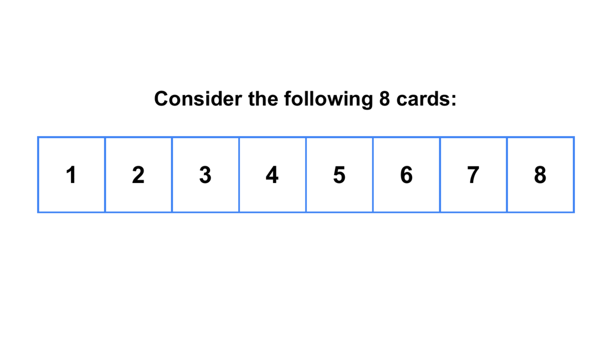
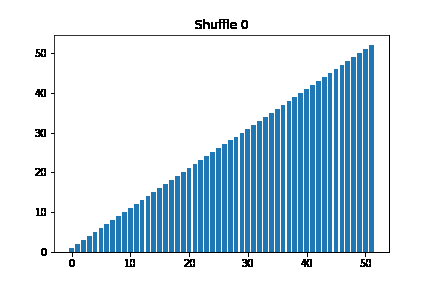
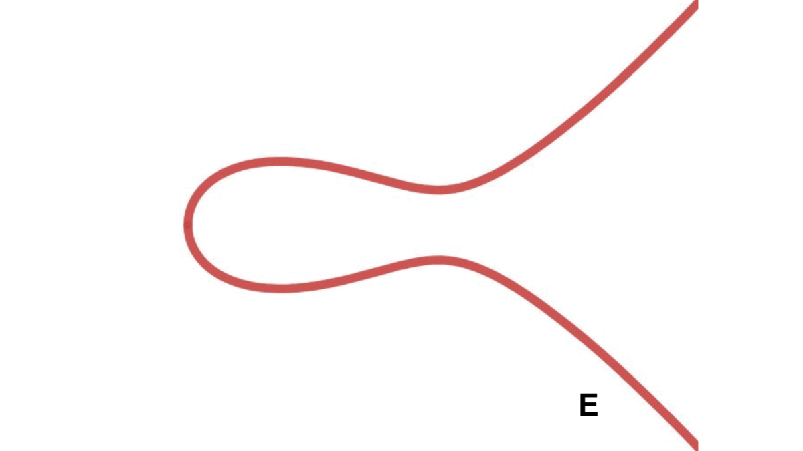
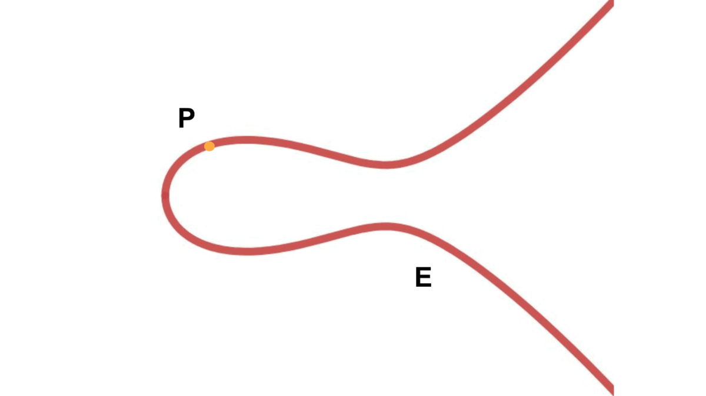

Abstract¶
This blog post is an exploration of the applications of group theory to various real life things and a complement to our final presentation on the topic of group theory in Statistics 91r, supervised by Professor Joseph K. Blitzstein. We study how outer perfect shuffles return a deck of 52 cards to its initial configuration after only 8 shuffles, show how group theory motivates the construction of macros (a key tool for solving the Rubik's cube), and explore the natural group structure on elliptic curves (and how this structure motivates elliptic curve cryptography). At last, we exhibit an upper bound for how abelian a nonabelian group can be, as well as briefly mention other applications of group theory that we did not have the time or space to elaborate on in this presentation.
Contents¶
Eight Shuffles Are Enough¶
Consider a brand new deck of 52 cards. In our first result, we shall show that 8 shuffles of this deck, performed in a precise way, will bring this deck back to its original configuration. To do this, we first define what it means to shuffle a deck of cards in a precise way in the general case where we have $2n$ cards. Then, once we establish results in this more general case, the special case $2n=52$ follows.Definition 1.1 (Outer Perfect Shuffle) In our deck of $2n$ cards, suppose that the cards are numbered $0,\dots,2n-1$. Then, an outer perfect shuffle is a shuffle of the cards in which one first splits the pack into two halves of equal size, top and bottom, and then interleaves the two halves in such a way that the top card winds up on top and the bottom card winds up on the bottom.
An example of a perfect 8 shuffles is as follow:

Theorem 1.2 The order of the outer perfect shuffle (i.e. the number of outer perfect shuffles needed to return a deck to its initial configuration) is the order of the element 2 in the multiplicative group of nonnegative integers $(\mathbb{Z}/2n\mathbb{Z})^\times$.
Proof In a single outer perfect shuffle, consider where each card is sent to:
- The top and bottom cards remain where they are.
- The cards numbered $1,\dots,n-1$ get sent to the position of the card twice their number. After all, for each card $k$ with $1\leq k\leq n-1$, a card is placed between that card and the card that used to be below it.
- The cards numbered $n,\dots,2n-2$ get sent to the position of the card initially at the position twice their number modulo $2n-1$. After all, we can apply the same logic as in the previous case, but once we go beyond $2n-1$, the positions "reset back to 0," but this is the same as modding out by $2n-1$.
Thus, every card $k$ not at the bottom or top of the deck is sent to $2k\bmod 2n-1$. So if we let the order of the outer perfect shuffle be $r$, we find that after $r$ outer perfect shuffles, the card at position $k$ is sent to position $2^r k$, which needs to equal $k$ modulo $2n-1$. But for this to hold for all $k$, necessarily $2^r$ must equal 1 modulo $2n-1$, so $r$ is precisely $\mathrm{ord}(2)$ in $(\mathbb{Z}/2n\mathbb{Z})^\times$. We leave as an exercise to the reader to check that $r\geq \mathrm{ord}(2)$ and $r\leq \mathrm{ord}(2)$ from the deductions made so far. $\square$
By the result above, we should be able to find the order of the outer perfect shuffles in the case $2n=52$. But for larger $n$, finding such an order might be tedious, so one might wonder if there is a simpler expression in terms of $n$ for the number of shuffles that is sufficient to return a deck of $2n$ cards to its original position. This upper bound for the number of shuffles needed is our next result.
Theorem 1.3 After at most $2n-2$ repetitions of the outer shuffle, the cards are all in their original position. In other words, $\mathrm{ord}(2)\leq 2n-2$ for $2\in (\mathbb{Z}/2n\mathbb{Z})^\times$.
Proof Since $\gcd(2,2n-1)=1$, $2^{\varphi(2n-1)}\equiv 1\bmod 2n-1$ by Euler's theorem, where $\varphi$ is Euler's totient function. Moreover, $\varphi(2n-1)\leq 2n-2$ because there are no more than $2n-2$ integers less than $2n-1$ that are relatively prime to $2n-1$. So $$ \mathrm{ord}(2)\leq \varphi(2n-1)\leq 2n-2. $$ $\square$
The above proof was relatively short, but we cheated by using Euler's theorem and Euler's totient function. So to account for this, we will define Euler's totient function and prove Euler's theorem. This is a nice application of group theory!Definition 1. 4 (Euler's Totient Function) For a given positive integer $n$, Euler's totient function, $\varphi(n)$, counts the number of positive integers up to $n$ that are relatively prime to $n$, i.e. the number of integers $k\leq n$ such that $\gcd(n,k)=1$.
Theorem 1.5 (Euler's Theorem) For any positive integer $a$ coprime to $n$; that is, with $\gcd(a,n)=1$, the congruence equality $$a^{\varphi(n)}\equiv 1\bmod n$$ holds.
Proof The elements modulo $n$ that are relatively prime to $n$ form a group $G$ under multiplication that has order $\varphi(n)$. Because $a\in G$, Lagrange's theorem yields \[ a^{\varphi(n)}=a^{|G|}\equiv 1\bmod n. \] $\square$
Therefore, in the case $2n=52$, we know that a deck of 52 cards will return to its initial configuration after $52-2=50$ shuffles. But of course, by computing the order of $2$ in $(\mathbb{Z}/52\mathbb{Z})^\times$, we find that we can do much, much better.
Theorem 1.5 (8 Shuffles Are Enough) The order of 2 in $(\mathbb{Z}/52\mathbb{Z})^\times$ is 8.
Proof The only way to do this is explicit computation. Modulo 51, observe that \[ 2^1\equiv 2, \ \ 2^2 \equiv 4, \ \ 2^3\equiv 8, \ \ 2^4 \equiv 16, \ \\ \ 2^5\equiv 32, \ \ 2^6\equiv 13, \ \ 2^7\equiv 27, \ \ 2^8\equiv 1. \] From this calculation, we find that 8 is the smallest positive integer so that $2^8\equiv 1\bmod 51$. In other words, the order of 2 in $(\mathbb{Z}/52\mathbb{Z})^\times$ is 8, as desired. $\square$
An example illustration of the proof is as follows, each bar represents card 1 - 52

Solving the Rubik’s Cube¶
To solve the Rubik's cube, one usually has to learn a certain core set of algorithms, called macros. Using group theory, we will show why these solutions do not come out of nowhere and are motivated by various concepts in group theory.
Definition 2.1 (Singmaster Notation) For a fixed Rubik's cube and orientation, we use the following notation to refer to the appropriate sides of the cube:
- $F$: the front side of the cube.
- $D$: the bottom side of the cube.
- $L$: the left side of the cube.
- $R$: the right side of the cube.
- $U$: the upper side of the cube.
- $B$: the back side of the cube.

Definition 2.2 (Rubik's Cube Group) The Rubik's cube group, denoted $\mathcal{R}$, is the group of all permutations of the Rubik's cube. The operation on this group is concatenation of the sequences of rotations of cube faces.
The identity on this group is the "do nothing" permutation, associativity is obvious, and the inverse of any element $P_1\cdots P_n$ is $p_n\cdots p_1$, where lowercase $p_i$ is the operation needed to reverse the operation given by uppercase $P_i$. However, check that this group is not abelian! Moreover, there are 54 facets that can be arranged and rearranged through twisting and turning the faces of the cube, so $\mathcal{R}$ lies naturally embedded within the symmetric group on $54$ elements, $S_{54}$. This means that the elements in $\mathcal{R}$ can be given cycle notation, and therefore can be assigned a parity (even or odd) based on the number of 2-cycles in its decomposition.
Theorem 2.3 The number of cubies (the mini blocks on the Rubik's cube) that are exchanged from an initial position of a Rubik's cube is always even.
Proof Induct on the number of face rotations, $n$. After 0 moves on an unsolved cube, there are no cubies exchanged, and 0 is even. Moreover, any sequence of moves is composed of single faced turns. By assumption, after $n$ moves, the cube has an even number of cubies exchanged. Because the ($n+1$)-st move will be a face turn, there will be an even number of cubies flipped, and we are done. $\square$
In particular, the above result implies that there is no sequence of moves that will exchange a single pair of cubies. This means that when two cubies are exchanged, we know there must be other cubies exchanged as well. Eventually, we will get around this problem by using 3-cycles that will cycle 3 cubies, including the two that we want to exchange.
Theorem 2.4 (Commutator) If $P$ and $M$ are any two cube moves, their commutator, denoted $[P,M]$ is the element $PMP^{-1}M^{-1}$. If $P$ and $M$ commute, their commutator is simply the identity; otherwise, we can measure the "relative commutativity" by the number of cubies changed by applying the commutator.
The important thing about commutators is that it often gives rise to useful pairs of moves. Indeed, starting with a commutator at the base, one can create macros that do specific and important things like the following:
- $FUDLLUUDDRU$ flips exactly one edge cubie on the top face;
- $rDRFDf$ twists one cubie on a face;
- $FF$ swaps a pair of edges in a slice;
- $rDR$ cycles three corners.
Definition 2.5 (Conjugation) Let $M$ be some macro (sequence of cube moves) that performs a certain useful operation, say a three-cycle of edge pieces. Then, for some cube move $P$, $PMP^{-1}$ is defined to be the conjugation of $M$ by $P$.
Conjugating a group element is another very useful tool that will help us describe and build useful moves. For instance, when solving the cube, one straightforward approach is to solve it layer by layer. Once you get to the third (and last) layer, some of the edge pieces might be flipped the wrong way. We want to flip these pieces correctly, but leave the bottom two layers intact, and we can use conjugation to do so. Suppose we want to make the move consisting of the commutator $RUru$. This changes the top layer, but it also affects 2 pieces in the $R$ layer. We can fix this by conjugating by $F$ to get $FRUruf$. By first performing $F$ and then reversing this action by $f$ after the macro is performed, we ensure that only the top row pieces are affected. In general, once we find a sequence of moves that performs the operation we want, we can conjugate by the appropriate cube move to apply it to only the desired pieces. But why does conjugation do this?
Theorem 2.6 If two elements in $S_n$ are conjugate, they have the same cycle lengths.
Proof It suffices to prove that if $\sigma = (a_1\ \cdots \ a_k)$ is a $k$-cycle, the conjugation $\tau\sigma\tau^{-1}$ is given by $(\tau(a_1)\ \cdots \ \tau(a_k))$. Indeed, for each $1\leq i\leq k$, we have \[ \tau(a_i)\mapsto a_i\mapsto a_{i+1}\mapsto \tau(a_{i+1}), \] so the action on $\{\tau(a_i)\}$ is as claimed. And for any other element, say $b$, we get \[ \tau(b)\mapsto b\mapsto b\mapsto \tau(b). \] $\square$
Thus, any macro and its conjugate have the same cycle structures. The only difference are the actual pieces involved in the cycles. Conjugating by an appropriate element is equivalent to selecting the most convenient pieces in the cycle.
Elliptic Curve Group Structure¶
In this section, we will introduce elliptic curves and their group structure. Then, we will say a few words about how, and why, elliptic curves are so important in modern cryptography. We start, of course, by defining elliptic curves.
Definition 2.1 An elliptic curve is a curve given by an equation of the form $y^2=x^3+Ax+B$, where the discriminant $\Delta=4A^3+27B^2$ is nonzero. For reasons to be explained later, we will also include an extra point, $\mathcal{O}$, that is ``at infinity,'' so that an elliptic curve $E$ is formally the set given below: \[ E=\{(x,y)\mid y^2=x^3+Ax+B\}\cup \{\mathcal{O}\}. \]
The amazing thing about elliptic curves is that we can use geometry to make the points of an elliptic curve into a group! For any two points $P$ and $Q$ on $E$, we can draw a line $L$ through $P$ and $Q$. This line intersects the cubic curve $E$ in a third point, say $R$. We can then draw the vertical line through $R$, which will hit $E$ at another point. This last point will be what we define as the sum of $P$ and $Q$ on $E$, which we denote $P\oplus Q$. An illustration of Elliptic Curve is illustrated below. So, does $(E,\oplus)$ satisfy the group axioms?

As of now, that might still be a little too optimistic, as there are several questions that still need to be addressed. For instance, how should we add a point $P$ to itself, since there are many different lines that go through $P$? The answer is to let $L$ be the tangent line to $E$ at $P$, take $R$ to be the third intersection point, and reflect across the $x$-axis and call the resulting point $P\oplus P$. This is illustrated below.

Moreover, for any $P\in E$, what is $P$ added to its vertical reflection $-P$? Since there is no point in the plane that works, this is why we have an extra point $\mathcal{O}$ "at infinity." This is illustrated below.
We impose that $\mathcal{O}$ is a point on every vertical line. Now, we have the following addition law.
Theorem 3.2 (Addition on E) The addition law on $E$ has the following properties:
- $P\oplus\mathcal{O}=\mathcal{O}\oplus P=P$ for all $P\in E$.
- $P\oplus (-P)=\mathcal{O}$ for all $P\in E$.
- $P\oplus (Q\oplus R)=(P\oplus Q)\oplus R$ for all $P,Q,R\in E$.
- $P\oplus Q=Q\oplus P$.
Proof All of the group properties above are trivial to check (by geometric reasoning) except the associative law (c). The associative law can be verified by a lengthy computation using explicit formulas (this can be an exercise for the reader!), or by using more advanced algebraic or analytic methods. $\square$
Moreover, one can check that points with coordinates in a particular field form a subgroup of the full set of points. This leads to the following theorem.Theorem 3.3 (Poincare, 1900) Let $K$ be a field, and suppose that an elliptic curve $E$ is given by an equation of the form $y^2=x^3+Ax+B$, $A,B\in K$. Set \[ E(K)=\{(x,y)\in E\mid x,y\in K\}\cup\{\mathcal{O}\}. \] Then, $E(K)$ is a subgroup of the group of all points of $E$ under the addition $\oplus$.
Now, we turn to how elliptic curves are used in cryptography. In cryptography, it is very desirable to have a function that is very easy to compute one way but very difficult to compute going the other way (i.e. a function with a hard "inverse problem"). In traditional RSA cryptography, multiplying two large primes is the easy problem and factoring a large number into primes is the hard problem
However, RSA cryptography is flawed because for large enough numbers, the easy problem gets difficult: multiplying two large numbers also takes a long time for large enough numbers! So we look to elliptic curves for a better function.
Theorem 3.4 Consider the finite group $E(\mathbb{F}_p)$. The repeated $m$-fold addition \[ mP=P\oplus \cdots \oplus P\in E(\mathbb{F}_p) \] can be computed efficiently. In particular, it can be computed in $O(\log m)$ time.
Proof We can use the double-and-add method. First, express $m$ in binary as \[ m=m_0+m_1\cdot 2+m_2\cdot 2^2+\cdots +m_r\cdot 2^r, \\ \ m_0,\dots,m_r\in \{0,1\}. \] Then, $2^kP=2\cdots 2P$ requires only $k$ doublings, and $mP$ can be computed as \[ mP=m_0P+m_1\cdot 2P+m_2\cdot 2^2P+\cdots+m_r\cdot 2^rP. \] Thus, on average, it takes approximately $\log_2(m)$ doublings and $\frac{1}{2}\log_2(m)$ additions to compute $mP$. It follows that $mP$ has time complexity $O(\log m)$. $\square$
The inverse problem to the computation is called the elliptic curve discrete logarithm problem, or ECDLP for short. This problem is defined precisely below.Definition 3.5 (ECDLP) Let $E$ be an elliptic curve defined over a finite field $\mathbb{F}_p$. \[ E:y^2=x^3+Ax+B, \ \ A,B\in \mathbb{F}_p. \] Let $S$ and $T$ be points in $E(\mathbb{F}_p)$. Find an integer $m$ so that $T=mS$. The smallest integer $m$ with this property is called the discrete logarithm of $T$ with respect to $S$ and is denoted $m=\log_S(T)$. It might also be called the index of $T$ relative to $S$.
Conjecture 3.6 For general elliptic curves, the fastest method to solve ECDLP has time complexity $O(\sqrt{p})$, where the coefficients of the curve belong in $\mathbb{F}_p$.
To this day, the conjecture above holds; that is, there is no known method to solve ECDLP that is faster than a method with time complexity $O(\sqrt{p})$. Therefore, from a cryptographic perspective, the ``easy problem'' in elliptic curve cryptography can be solved rather quickly, even for large $m$, while the ``hard problem'' in elliptic curve cryptography is intractable for large $p$, say $p\approx 2^{160}$. Hence, cryptographic constructions based on ECDLP have smaller keys and smaller message blocks.
The 5/8 Bound for Abelianess¶
Suppose that $G$ is a finite nonabelian group. Pick two elements $a,b\in G$ uniformly at random. What is the probability that they commute, i.e. that $ab=ba$? In this section, we will place an upper bound on this probability. The original title for our presentation was supposed to be ``group theory and its applications to probability and statistics,'' so we felt that it was important to include at least some probability in our final presentation, which has morphed greatly from what it was supposed to be initially. So we answer this question, starting with the lemma below.
Lemma 4.1 Let $Z(G)=\{a\in G\mid ax=xa\ \forall x\in G\}$ be the center of $G$. Given that $G$ is nonabelian, the quotient $G/Z(G)$ is not a cyclic group.
Proof Check, as an exercise, that $Z(G)$ is a normal subgroup of $G$, so $G/Z(G)$ is well-defined. Then, suppose, for contradiction, that $G/Z(G)$ is cyclic. So each element in $G/Z(G)$ can be written as $g^iZ(G)$ for some $i$. Since the cosets $g^i Z(G)$ partition $G$, we can write $a\in G$ as $a=g^i x$ and $b\in G$ as $g^j y$ for $x,y\in Z(G)$. But \[ ab=g^ixg^jy=g^{i+j}xy=g^{j+i}y \\ =g^jg^iyx=g^jyg^ix=ba, \] so $G$ is abelian, contradicting our initial assumption that $G$ was nonabelian.
Theorem 4.2 The probability that two elements of $G$, picked uniformly at random, commute is at most $5/8$.
Proof Let $C=\{(a,b)\in G\times G\mid ab=ba\}$. By the naive definition of probability, it suffices to show that $|C|/|G|^2\leq 5/8$, i.e. $|C|\leq (5/8)|G|^2$. Recall, or check as an exercise, that all groups of order 1, 2, and 3 are cyclic, so since $G/Z(G)$ is not cyclic, it has order at least 4, so $|G/Z(G)|\geq 4$, i.e. $|Z(G)|\leq |G|/4$. Now, we perform direct counting. Let one element in either component of an ordered pair in $C$ be $x$. If $x\in Z(G)$, $x$ commutes with every other element in $G$, so there are $|Z(G)||G|$ different ordered pairs in $C$ counted in this case by the multiplication rule. If $x\notin Z(G)$, the elements of $G$ that commute with $x$ form a proper subgroup of $G$ (since $G$ is nonabelian), so by Lagrange's theorem, there are at most $(|G|-|Z(G)|)|G|/2$ different ordered pairs in $C$ counted. Thus, \begin{align*} |C| & \leq |Z( G) ||G|+\frac{1}{2}|G|( |G|-|Z( G) |)\\ & =\frac{1}{2} |G||Z( G) |+\frac{1}{2} |G|^{2}\\ & \leq \frac{1}{2} |G|\frac{|G|}{4} +\frac{1}{2} |G|^{2}\\ & =\frac{5}{8} |G|^{2}. \end{align*} $\square$
Theorem 4.3 The bound presented above is optimal, i.e. there exists a nonabelian finite group for which $|C|=(5/8)|G|^2$
Proof Consider the quaternion group $Q_8$ given by the generators and relations \[ \langle {\pm 1,\pm i, \pm j, \pm k\mid i^2=j^2=k^2=-1, \\ ij=-ji=k,jk=-kj=i,ki=-ik=j \rangle}. \] As an exercise, check that $Z(Q_8)=\{\pm 1\}$, and that the subgroup of all elements that commute with an element not in $Z(Q_8)$, which we call $K$, has size 4. Then, \begin{align*} |C| & =|Z( Q_8) ||Q_8|+( |Q_8|-|Z( Q_8) |) |K|\\ & =2(8)+( 8-2) (4)\\ & =40\\ & =\frac{5}{8}( 8)^{2}\\ & =\frac{5}{8} |Q_8|^{2}. \end{align*} $\square$
We can also use Monte Carlo to estimate the probability that two elements of $G$ commute. We will use the group $Q_8$ as an example. The result is after 1000 iterations, we see that the probability of commutative elements is approximately 0.652, which is what we found mathematically.
Note: It takes approximately 1 minute for the simulation to finish running.
Other Applications of Group Theory¶
Seven Shuffles Are Enough (To Be Random)
We have shown that eight perfect shuffles return a deck of cards to its initial position, but humans are terrible at perfect shuffles. However, that might turn out to be a good thing, since in most cases, we would like a deck of cards to be as close to uniformly random as possible instead. It turns out that seven (imperfect) riffle shuffles are enough for a deck of cards to be essentially random.
Theorem 5.1 (7 Shuffles Are Enough) Imperfect shuffles can be modeled with the GSR measure $Q^{*k}$, and repeated such shuffles converges to the uniform distribution $U$. When $n=52$, the total variation distance $|| Q^{*k}-U || \approx 0.334$.
In 1986, Persi Diaconis and David Aldous presented a rigorous argument (treating repeated shuffling as a random walk on $S_n$) for why it takes just seven imperfect shuffles to mix a deck of cards thoroughly. Fewer are not enough and more do not significantly improve the mixing! Details about how this notion is made precise and proofs can be found in the paper Shuffling Cards and Stopping Times (1986)
Analyzing Ranked Data
How should one analyze ranked data? The naive thing to do is to consider simple averages like the proportion of times each item is ranked first (or last) and the average rank for each item. These are the first-order statistics: linear combinations of the number of times $i$ was ranked in position $j$. However, these statistics are not always representative: if some data are only partially ranked, how should we account for these situations and get a more comprehensive analysis of the data? A second-order statistic, proposed by Persi Diaconis in 1987, works as follows.
Theorem 5.2 Suppose that there are $n$ items to be ranked. Data can be regarded as a function $f$ on $S_n$, with $f(\pi)$ being the number of rankers choosing ranking $\pi$. There is a natural decomposition of the space of all such functions into orthogonal subspaces invariant under relabeling.
With this, we can then use spectral analysis of time series to further decompose these subspaces into projections. Details can be found in the paper A Generalization of Spectral Analysis With Applications to Ranked Data (1987).
References¶
[1] D. Aldous and P. Diaconis. Shuffling cards and stopping times. The American Mathematical Monthly, 93(5):333–348, 1986.
[2] L. Daniels. Group theory and the rubik’s cube. Lakehead University, 2014
[3] P. Diaconis. A generalization of spectral analysis with application to ranked data. The Annals of Statistics, pages 949–979, 1989
[4] P. Diaconis. Mathematical developments from the analysis of riffle shuffling Groups, combinatorics & geometry (Durham, 2001), pages 73–97, 2003.
[5] P. Diaconis, R. Graham, and W. M. Kantor. The mathematics of perfect shuffles. Advances in applied mathematics, 4(2):175–196, 1983.
[6] J. Li, E. Demaine, and M. Gymrek. The mathematics of the rubik’s cube, 2009
[7] J. H. Silverman. An introduction to the theory of elliptic curves. Brown University. June, 19:2006, 2006.
[8] C. Sugar and E. Wepsic. Some upper bounds for commutativity and cyclicity measures in finite groups. Mathematical Sciences Technical Reports (MSTR) , 1992.
[9] N. Sullivan. A (relatively easy to understand) primer on elliptic curve cryptography. Cloudfare blog, 2013.